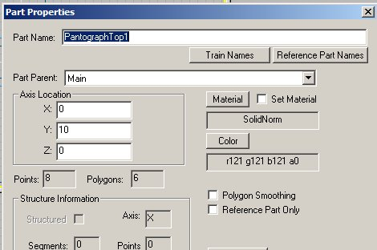

How To Animate An Electric Loco (And Make Parts Move Using The P Key): Section 3
by Paul DeVerter
A Port City Car Co. Project Copyright © 2005
SECTION 3 - A Linecar with Sliding Gangplank
We are going to move on to a slightly more complex model. We will build a Linecar (or mock-up of one) and it will include two different animated parts. First it will have an elevating Tower that will raise from a running position, to an elevated position. Second, it will have a Gangplank that will slide out to the side, after the Tower has reached the top, adjacent the trolley wire. This would allow a lineman to work on wire that is being set over a switch, or the like.
Here is what the Linecar with Tower and Gangplank looks like in running position
Again all of these are simple parts, so proceed to make the body, which we will call Main, some reasonable length, width, and height. I have chosen to texture it yellow. On top of this, about in the center, make a slightly wider elevator or Tower. It will raise up toward the trolley wire when the P key is toggled. I colored mine red. Then, the third and final part is the Gangplank, here colored turquoise, which will slide out to the side after the Tower has finished rising upwardly.
Just as with the TrolleyPole locomotive, set the origin so that the Main is two or three feet above the origin, and the axes of the Main are on the origin. The axes of the other two parts may be conveniently left at the center of each of those parts. So, here is what we have in TSM:
We need to fill out the Project Properties menu items, and need to make a few choices. This time we will again chose 10 animation frames, and otherwise follow the format we used in Section 2:
We also need to name some parts in Part Properties, lets choose a couple of the required Train Names from the list. How about calling the Tower "PantographTop1", and making its Part Parent Main.

Call the Gangplank "PantographBottom1", with the same Part Parent.
Notice that I have called the top part bottom, and vice versa. This was done to show you that it really makes no difference what you call these parts for this kind of animation. If we were making a true pantograph, it might be different.
Now for the animation. This will be the opposite of the TrolleyPole, and just like the Rail Gun. We want the Gangplank in, and the Tower down when the loco is in running condition. We need to make the animation with the first Frame having the parts fully extended, and the last Frame fully retracted. We will also need to arrange the animation so that about half of the animation frames are used in pulling in the Gangplank and somewhat more are used in lowering the Tower. This is because raising and lowering a Tower should take longer than sliding out a Plank.
You must now use the Move tool to raise the Gangplank up to the desired height and then out to the desired sideways extension. You have two choices about the Tower. You can animate it simultaneously, or you may go back and animate it later. Lets assume you will do both together - which is a little more complicated because you have to keep track of what you are doing, but somewhat more logical. Move the Gangplank up and out. Then move the Tower up so that it is under the Gangplank, then make the Gangplank the selected part, and click the "Ani" button. You will then be in Frame 0 out of 9 altogether. Here is what you should see in perspective view as well as in the front view:

With the Gangplank selected click the Set Motion button. Then toggle out of animation, and select the Tower. Again click the "Ani" button, and click the Set Motion button, this time for the Tower.
That takes care of Frame 0 for both parts. Toggle out of animation, and once again select the Gangplank. Click the "Ani" button, and move the slider over to the right until you are in Frame 4.
In this Frame 4 you will have to move the Gangplank over to the center then click the Set Motion button. You need do nothing about the Tower, as it has not moved. The Sim will automatically interpolate the intervening frames of movement for the Plank.
Now move the slider back to Frame 0, and toggle out of animation once again. Then select the Tower and again click the "Ani" button. Move the slider to the right until you are in Frame 5. Once again press the Set Motion button. This sets the beginning point for the downward movement for the Tower. You need do nothing about the Gangplank, as it has not moved since Frame 4, but it will not hurt to use the Set Motion button for the Gangplank if you like.
We will move to the final positions of both parts. Since we already have the Tower selected, move the slider to the far right, and you will be in Frame 9. Use the Move tool to lower the Tower to the running position. Click the Set Motion button, and we are through with animating the Tower. Return to Frame 0, toggle out of animation, and select the Gangplank once more. Run the slider to the right, and you will be in Frame 9 for the Gangplank. Use the Move tool to lower the Plank down until it is on top of the lowered Tower, as shown below. Then push the Set Motion button, and you are through with animating the Gangplank as well.
Now all of that moving back and forth between two parts is a bit confusing. If you find it so, then you may wish to avoid all of that and simply work with the Gangplank by itself, until you have it moving when and where you wish in Frames 0 through 9. Then go back and animate the Tower by itself. The end result will be the same.
It would be well to check the two parts in the Part Animation table, so go there and look at what you have for the Gangplank (PantographBottom1). In Frame 0, you will see that the Gangplank is over at -5.5(x), up at 20(y), and in the middle on the z axis. In Frame 4, the Gangplank is now essentially 0 in x, still up at 20 in y, and in the middle in z. Frame 5 shows the same positions, as it should. Notice there is a little bit of noise in the x numbers when comparing Frames 4 and 5. Why this happens I do not know, and you can eliminate it if you desire. Finally Frame 9 shows the Gangplank has moved vertically down to 15 in y, and remains the same in x and z.
Let's also look at the Tower in the Part Animation table. Here we see Frames 0, 5 and 9. The only movement of the Tower is vertically between frames 5 and 9, and that is in the y axis, just as we programmed the animation. It looks like we are all set.
The only things left to do are Create the Train Simulator Object, and then make a consist with our new loco: LinecarSlide. Follow the steps as you did for the TrolleyPole or Rail Gun, and look at what you have. Push the P key, and enjoy.

One thing you may notice is as the Sim is being set up, you will see that the Tower is up, and the Gangplank extended, but it is going down by itself. Why is that? Well, the default eng file has the line:
PantographToggle1 ( 0 1 1 )
Remember that the first Frame is the 0 in the above line and the first frame of animation has the Plank up and extended outwardly. And in the above line the last number is 1, which directs the Pantograph to go to the last frame of animation, which has the Plank in and down. So, as the Sim is being set up, the .eng file animation is having the Pantograph move to the last frame. If you want it to stay up, simply change the last number to "0".
CONCLUSION & LESSONS LEARNED
We have made a lot of progress with this lesson.
- We now know how to animate two parts and have them move in different directions, one after the other.
- We have learned how to be terribly confused in trying to keep track of which of the objects is actually selected, so that we click the correct button for the desired part. But fear not as it will only get more confusing as we move into Section 4.
- You should also now realize that you can control the speed of movement of the various parts by adjusting the number of frames utilized by each.
If you would like to see a fully suited up Linecar, made using the principles you have just learned, then go to the Train-Sim.com library, and obtain a copy of the Interstate Public Service Linecar #217, ipsc217.zip. There you will find a fine example of a Linecar that has a Tower that raises and a Gangplank that extends, and looks a thousand times better than the model you just made.

Next up will be Section 4, with two more animated parts.